In diesem Fenster, welches in der WinLine FIBU oder in der WinLine FAKT über den Menüpunkt…
1 Stammdaten
1 Belegaustausch
1 XML-Vorlagen
… geöffnet wird, können XML-Vorlagen für den "Import" sowie für den "Export mittels XML-Vorlagen" erstellt werden.

Folgende Eingabefelder, Einstellungen und Information stehen zur Verfügung:
XML-Vorlagen
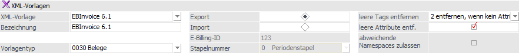
Ø XML-Vorlage
Aus der Auswahlliste kann die zu bearbeitende Vorlage gewählt werden. Wird eine Neuanlage aufgrund eines bisher nicht bekannten XML-Aufbaus benötigt, so ist wie folgt vorzugehen:
ü Auswahl "XML-Vorlage" auf "NEUEINGABE" stellen und bestätigen
ü Über den Button "andere XML-Datei verwenden" die Quell-XML-Datei importieren (der XML-Aufbau wird in der mittleren Tabelle direkt angezeigt)
ü Ein "Bezeichnung" hinterlegen und den "Vorlagentyp" wählen
ü In den beiden Tabellen alle notwendigen Eingabe und Einstellungen durchführen
ü XML-(Import)-Vorlage speichern
Achtung
Ausgenommen von einer Bearbeitung sind die jene XML-Vorlagen, welche von der WinLine bereitgestellt werden (sogenannte XML-Standard-Vorlagen). D.h. diese "Standard"-Vorlagen können zwar betrachtet, aber nicht verändert werden.
Wird eine Kopie solch einer Standard-Vorlage benötigt, so wird diese zunächst aus der Liste gewählt, die Bezeichnung mit einem neuen Namen versehen und gespeichert.
Ø Bezeichnung
Anzeige der Bezeichnung der XML-Vorlage bzw. Vergabe einer neuen Bezeichnung bei einer Neuanlage einer Vorlage.
Ø Vorlagentyp
Je nachdem welche Daten importiert/exportiert werden sollen, stehen folgende Vorlagetypen zur Auswahl zur Verfügung:
Stammdaten
ü 0001 - Personenkonten (nur Import)
ü 0002 - Sachkonten (nur Import)
ü 0003 - Interessenten (nur Import)
ü 0004 - Artikel (nur Import)
ü 0005 - Preise (nur Import)
ü 0006 - Arbeitnehmer (nur Import)
ü 0007 - Kontakte (nur Import)
ü 0008 - Anlagen (nur Import)
ü 0009 - Kostenstellen (nur Import)
ü 0010 - Kostenarten (nur Import)
ü 0011 - Kostenträger (nur Import)
Bewegungsdaten
ü 0030 - Belege (siehe auch Exkurs - Belegexport)
ü 0031 - Buchungsstapel - KF (nur Import)
Ø Export / Import
Einstellung, ob die XML-Vorlage für den Import bzw. Export verwendet werden soll. Die Option "Import" ist für alle Vorlagetypen möglich; Export jedoch nur für den Vorlagetyp "Belege".
Beim Import von "Buchungsstapeln (KF)" gibt es die Einschränkung, dass nur KF-Buchungen importiert werden können.
Ø E-Billing-ID
An dieser Stelle wird die interne eindeutige Nummer der Vorlage angezeigt.
Ø Stapelnummer
Durch Auswahl einer Stapelnummer kann festgelegt werden, in welchen Buchungsstapel die importierten Buchungen gestellt werden sollen. D.h. diese Auswahllistex ist grundsätzlich nur für Vorlagen des Typs "0031 - Buchungsstapel (KF)" freigeschalten.
In der Auswahlliste stehen neben dem Eintrag "0 - Periodenstapel", welcher der Logik des FAKT-Monatsstapels entspricht, alle als "FAKT-Stapel" definierten Buchungsstapel zur Auswahl.
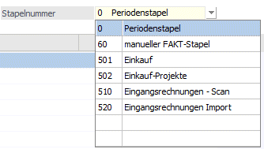
Achtung
Nachdem die XML-Vorlagen mandantenübergreifend sind, eventuell hinterlegte FAKT-Stapel jedoch Mandanten bzw. Wirtschaftsjahr bezogen sind, kann beim Laden einer Vorlage die entsprechende Meldung erfolgen, und die Auswahl der Stapelnummer wieder auf "0" zurückgesetzt.
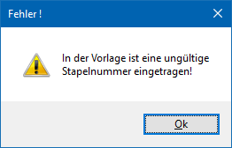
Beim Import einer XML-Datei wird ebenfalls geprüft, ob jener, in der Vorlage hinterlegte Buchungsstapel vorhanden, und ein FAKT-Stapel ist. Ist dies nicht der Fall, so wird die Datei nicht importiert, und in der Info-Zeile unterhalb der Importtabelle eine entsprechende Meldung angezeigt.
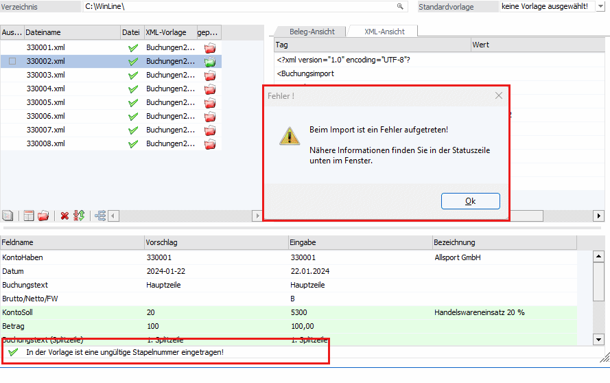
Ø leere Tags entfernen (nur bei Export-Vorlage)
Durch Auswahl aus der Auswahlliste kann festgelegt werden, wie leere Tags behandelt werden sollen:
ü 0 - nicht entfernen
ü 1 - immer entfernen
ü 2 - entfernen wenn kein Attribut vorhanden
ü 3 - entfernen wenn kein Attributwert vorhanden
Bei Verwendung der Optionen 1 bis 3 wird in der Tabelle "XML-Struktur" die zusätzliche Spalte "Tag/Attribut muss erhalten bleiben" eingeblendet.
Ø leere Attribute entfernen (nur bei Export-Vorlage)
Diese Option steuert, ob leere Attribute aus der Datei entfernt oder in der Datei erhalten bleiben sollen. Über die Option "Tag/Attribut muss erhalten bleiben" in der jeweiligen Zeile der XML-Vorlage kann dies übersteuert werden.
Ø abweichende Namespaces zulassen
Mit dieser Option wird gesteuert, ob die Namespaces in der Importdatei mit jenen übereinstimmen müssen, die in der Datei für die Vorlage verwendet wurden, damit der Wert des Tags oder Attributs in die zugeordnete Variable übernommen wird.
Tabelle "XML-Struktur"
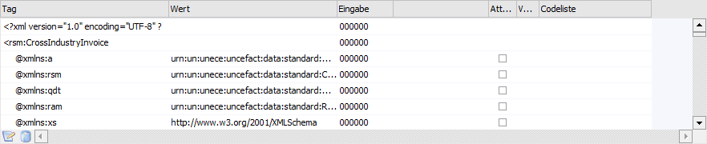
In dieser Tabelle wird die gesamte XML-Struktur (d.h. die logische Organisation und die Beziehungen zwischen den XML-Elementen) angezeigt. In weitere Folge müssen für einen Ex- oder Import statische Informationen, VBScript-Formeln oder WinLine Variablen angegeben werden.
Hinweis
Besonderheiten in Bezug auf den Belegexport werden in dem Kapitel Exkurs - Belegexport erörtert.
Ø Tag / Wert
In diesen Spalten werden die Tags der gewählten Vorlage sowie deren Werte angezeigt.
Ø Attribute
Im Feld "Attribute" kann aus einer Auswahlliste gewählt werden, welche Attribute übereinstimmen müssen, damit der Wert übernommen wird.
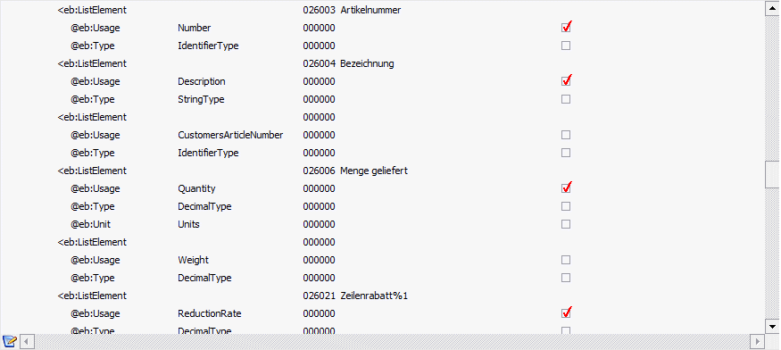
Beispiel
Damit der Wert "30002" auch in die zugewiesene Variable - z.B. als Artikelnummer - übernommen wird, muss nicht nur das Tag z.B. "<Invoice<Details<ItemList>ListLineItem>ListElement" vorhanden sein, sondern es muss auch das Attribut "Usage="Number" übereinstimmen!
Ø Eingabe
Im Feld "Eingabe" erfolgt die Zuweisung der Werte zu den einzelnen Tags. Aus der Auswahllistbox kann die benötigte Variable ausgewählt werden. Durch Auswahl des Wertes "999999" kann die Matchcodefunktion zur Suche nach Variablen aufgerufen werden.
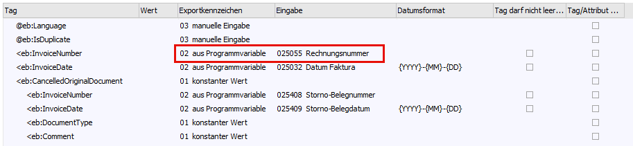
Hier stehen neben den Variablen aus der "normalen" Vorlagendefinition noch weitere Variablen zur Verfügung, die es als solche in der WinLine nicht gibt. Diese werden beim Import entsprechend behandelt (z.B. Zahlungsfrist (Datum), Skontofrist (Datum), ...)
Ø Datumsformat
Für Datumsfelder muss in einer zusätzlichen Spalte noch das Datumsformat (das dem Format des Inhalts des Feldes "Wert" entspricht) festgelegt werden.
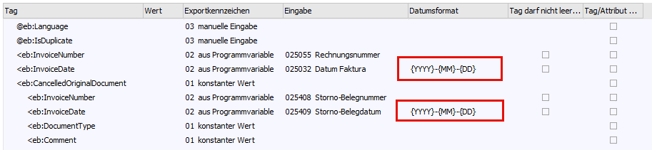
Beispiel
{YYYY} entspricht dem Eintrag der Jahreszahl (vierstellig)
- entspricht dem Bindestrich
{MM} entspricht dem Eintrag des Monats (zweistellig)
- entspricht dem Bindestrich
{DD} entspricht dem Eintrag des Tages (zweistellig)
Tabellenbuttons "XML-Struktur"
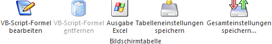
Ø VB-Script-Formel bearbeiten
Mittels dieses Buttons kann eine VB-Script-Formel bearbeitet werden.
Ø VB-Script-Formeln entfernen
Mit dieser Funktion kann eine VB-Script-Formel entfernt werden.
Ø Ausgabe Excel
Durch Anwahl des Buttons "Ausgabe Excel" wird der Inhalt der Tabelle an Microsoft Excel übergeben.
Ø Tabelleneinstellungen speichern
Die Spalten einer Tabelle können grundsätzlich an beliebige Positionen verschoben, bzw. in der Breite entsprechend angepasst werden. Durch Anwahl des Buttons "Tabelleneinstellungen speichern" werden die Einstellungen benutzerspezifisch gespeichert und bei dem nächsten Aufruf des Programmpunktes wieder vorgeschlagen.
Ø Gesamteinstellungen speichern
Im Gegensatz zu "Tabelleneinstellungen speichern" können mit "Gesamteinstellungen speichern" mehrere Tabellenaufbauten gespeichert und nach Wunsch geladen werden. Zusätzlich werden Sonderfunktionen der Tabelle (z.B. "Spalte gruppieren") ebenfalls bei der Speicherung bedacht.
Tabelle "Vorbelegungen"
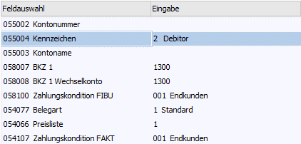
In dieser Tabelle werden jene Mussfelder (diese Felder MÜSSEN befüllt sein) angezeigt, die nicht für den Import ausgewählt wurden. Diese müssen vorbelegt oder beim Import manuell gefüllt werden.
Tabellenbuttons "Vorbelegungen"
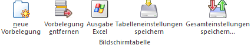
Ø neue Vorbelegung
Mittels dieses Buttons können neue Zeilen in die Tabelle eingefügt werden, um neue Vorbelegungen zu definieren.
Ø Vorbelegung entfernen
Mit dieser Funktion können Zeilen aus der Tabelle entfernt werden; jedoch nur jene, die selbst hinzugefügt wurden.
Ø Ausgabe Excel
Durch Anwahl des Buttons "Ausgabe Excel" wird der Inhalt der Tabelle an Microsoft Excel übergeben.
Ø Tabelleneinstellungen speichern
Die Spalten einer Tabelle können grundsätzlich an beliebige Positionen verschoben, bzw. in der Breite entsprechend angepasst werden. Durch Anwahl des Buttons "Tabelleneinstellungen speichern" werden die Einstellungen benutzerspezifisch gespeichert und bei dem nächsten Aufruf des Programmpunktes wieder vorgeschlagen.
Ø Gesamteinstellungen speichern
Im Gegensatz zu "Tabelleneinstellungen speichern" können mit "Gesamteinstellungen speichern" mehrere Tabellenaufbauten gespeichert und nach Wunsch geladen werden. Zusätzlich werden Sonderfunktionen der Tabelle (z.B. "Spalte gruppieren") ebenfalls bei der Speicherung bedacht.
Buttons
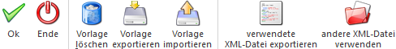
Ø Ok
Durch Drücken des Buttons "Ok" bzw. der Taste ESC werden die getätigten Änderungen gespeichert.
Ø Ende
Mit dem Button "Ende" bzw. der Taste ESC wird das Fenster geschlossen und alle nicht gespeicherten Eingaben verworfen.
Ø Vorlage löschen
Mit diesem Button können bestehende XML-Vorlagen gelöscht. Dazu muss eine weitere Sicherheitsabfrage mit JA bestätigt werden.
Hinweis
Die Standard-XML-Vorlagen können nicht gelöscht werden.
Ø Vorlage exportieren
Durch Drücken dieses Buttons kann die aktuell gewählte XML-Vorlage, mittels eines Dateidialogs, exportiert werden. Die Datei selbst wird mit der Dateierweiterung "MXVA" (mesonic XML-Vorlage) abgespeichert.
Ø Vorlage importieren
Mittels "Vorlage importieren"-Button können zuvor exportierte XML-Vorlagen wieder importiert werden. Dabei muss es sich um Dateien mit der Dateierweiterung "MXVA" (mesonic XML-Vorlage) handeln.
Ø verwendete XML-Datei exportieren
Durch Drücken dieses Buttons wird die in der Vorlage hinterlegte XML-Datei exportiert (um sie ggfs. zu bearbeiten und neu zu verwenden).
Hinweis
Wird beim Drücken des Buttons zusätzlich die Taste SHIFT gedrückt, so wird die XML-Datei ohne Werte exportiert.
Um eine neue Vorlage zu erstellen, wird eine grundsätzlich ein XML-Aufbau benötigt. Über diesen Button kann jener, mit Hilfe eines existierenden XML-Datei, in die WinLine importiert werden.
Hinweis
Wird eine Neuanlage aufgrund eines bisher nicht bekannten XML-Aufbaus benötigt, so ist wie folgt vorzugehen:
ü Auswahl "XML-Vorlage" auf "NEUEINGABE" stellen und bestätigen
ü Über den Button "andere XML-Datei verwenden" die Quell-XML-Datei importieren (der XML-Aufbau wird in der mittleren Tabelle direkt angezeigt)
ü Ein "Bezeichnung" hinterlegen und den "Vorlagentyp" wählen
ü In beiden Tabellen alle notwendigen Eingabe und Einstellungen durchführen
ü XML-(Import)-Vorlage speichern